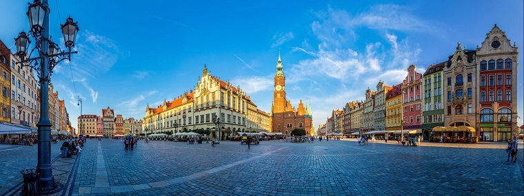

<article id="about" class="resize">
    
    <div id="text">
        <p class="textUnderBorder">
            I am a third year Computer Science student from Wroclaw, Poland. I work full-time
            and on the weekends I study at Wroclaw University of Science and Technology.<br/>
        </p>
        <p>
            I want to work as a Full-Stack Web Developer prefferably with Ruby on Rails and Angular 4. This website is
            the first step in that direction. I am currently in the process of learning Rails, after that I will move on
            to Angular. I have hands-on knowledge of Databases and SQL... among other things.
            Take a look at the <a href="#skills">skills</a> tab to get a clear picture about everything that I know
            as well as everything that I wish to learn.
        </p>
        <p>
            Be sure to check out the <a href="#projects">projects</a> section every now and then as new projects
            should appear on a regular basis. I will be sharing the code on GitHub.
        <p/>
    </div>
</article>
